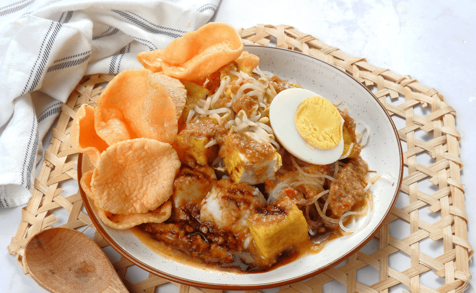

MAKANAN KHAS JAKARTA
1. NASI UDUK
Makanan khas Jakarta yang sangat populer dan menjadi makanan sehari-hari bagi masyarakat Jakarta adalah nasi uduk. Makanan khas Jakarta yang satu ini merupakan salah satu hidangan sarapan paling terkenal di Jakarta. Bagaimana rasanya? Bayangkan nasi yang dimasak dengan santan, kemudian disajikan dengan lauk-pauk yang beraneka ragam. Kamu bisa menikmatinya bersama ayam goreng, tempe, tahu, dan sambal kacang yang khas. Hidangan ini memiliki rasa gurih yang nikmat dan aroma harum santan yang tak tertandingi. Bagi penduduk Jakarta, Nasi uduk adalah pilihan sarapan yang paling tepat untuk memulai hari dengan penuh energi.
2. SOTO BETAWI
Tidak hanya nasi uduk, Jakarta juga punya soto betawi yang sangat menggugah selera. Soto betawi adalah sajian soto yang kaya akan cita rasa dan aroma. Kuahnya terbuat dari santan yang lezat dan diisi dengan potongan daging sapi, hati, limpa, dan babat yang empuk. Kalian, jangan lupa tambahkan potongan tomat, emping, bawang goreng, dan perkedel kentang. Yang membuat Soto Betawi semakin istimewa adalah kehadiran kerupuk gendar yang memberikan sensasi renyah yang unik.
3. KETOPRAK
Tentu banyak dari kalian yang juga familiar dengan makanan khas Jakarta yang satu ini. Ketoprak adalah pilihan tepat bagi kamu yang mencari hidangan vegetarian yang lezat. Hidangan ini terdiri dari ketupat, tahu goreng, bihun, sayuran segar, dan saus kacang yang begitu merangsang selera. Sensasi renyah dari kerupuk juga tak boleh dilewatkan. Selain lezat, Ketoprak juga merupakan hidangan yang sehat dan cocok untuk kamu yang peduli dengan pola makan.
4. KERAK TELOR

Kerak telor adalah makanan khas Betawi yang unik. Terbuat dari campuran beras ketan, telur ayam, ebi (udang kering), dan bawang merah goreng, hidangan ini menghadirkan lapisan kerak yang renyah di luar dan rasa yang gurih di dalamnya. Bagi para penikmat makanan tradisional, Kerak Telor adalah wajib dicoba ketika mengunjungi Jakarta, terutama di kawasan Kota Tua.
5. GADO-GADO
Jika ingin mengonsumsi sayuran segar, kamu bisa mencoba gado-gado. Makanan ini merupakan hidangan salad khas Indonesia yang juga sangat populer di Jakarta. Hidangan ini menggabungkan sayuran segar seperti kentang, tahu, tempe, dan kangkung yang disajikan dengan saus kacang yang lezat. Tidak lupa, tambahkan kerupuk dan telur rebus untuk pengalaman menyantap yang lebih lengkap. Rasanya yang segar dan saus kacang yang kental membuat Gado-gado selalu menjadi pilihan yang tepat, terutama saat cuaca panas.
6. ROTI BUAYA
Makanan khas Jakarta yang satu ini biasanya dijadikan sebagai simbol cinta saat acara pernikahan. Roti buaya adalah makanan ringan manis yang populer di Jakarta. Namanya unik, seperti bentuknya yang menyerupai kulit buaya. Roti ini terbuat dari adonan yang digoreng hingga berwarna cokelat keemasan dan dilapisi gula halus. Rasanya manis, renyah di luar, dan lembut di dalam. Roti Buaya sering dijadikan teman minum teh atau kopi, dan kamu bisa menemukannya di berbagai penjual kaki lima di Jakarta.
7. ASINAN BETAWI
Makanan khas Jakarta selanjutnya yang harus kamu coba adalah asinan betawi. Asinan betawi adalah hidangan sayuran segar yang disajikan dengan saus kacang yang lezat. Sayuran yang digunakan bervariasi, termasuk tauge, kol, kentang, dan selada air. Saus kacangnya yang kental dan gurih memberikan sentuhan khas pada hidangan ini. Terkadang, Asinan Betawi juga dihidangkan dengan kerupuk dan emping. Hidangan ini cocok untuk kamu yang ingin mencicipi kelezatan sayuran dengan cita rasa khas Jakarta.
8. KUE CUCUR
Tidak hanya makanan berat, Jakarta juga punya kue cucur yang cocok dinikmati sebagai teman minum teh. Kue cucur adalah camilan tradisional yang terbuat dari adonan tepung beras yang digoreng hingga berwarna cokelat keemasan. Rasanya manis dengan sedikit rasa gurih. Kue ini sering dijadikan teman minum kopi atau teh, dan bisa kamu temukan di berbagai penjual kaki lima di Jakarta. Selain itu, kue cucur juga sering hadir dalam acara-acara tradisional dan perayaan di ibu kota.